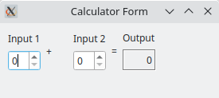

Calculator Form
Using a form created with Qt Designer in an application.
The Calculator Form Example shows how to use a form created with Qt Designer in an application by using the user interface information from a QWidget subclass.

The example presents two spin boxes that are used to input integer values and a label that shows their sum. Whenever either of the spin boxes are updated, the signal-slot connections between the widgets and the form ensure that the label is also updated.
Preparation
The user interface for this example is designed completely using Qt Designer. The result is a UI file describing the form, the widgets used, any signal-slot connections between them, and other standard user interface properties.
To ensure that the example can use this file, we enable the CMAKE_AUTOUIC feature and list the UI file in the source files:
set(CMAKE_AUTOUIC ON)
qt_add_executable(calculatorform
calculatorform.cpp calculatorform.h calculatorform.ui
main.cpp
)
For qmake, we need to include a FORMS declaration in the example's project file:
FORMS = calculatorform.ui
When the project is built, uic will create a header file that lets us construct the form.
CalculatorForm Class Definition
The CalculatorForm class uses the user interface described in the calculatorform.ui file. To access the form and its contents, we need to include the ui_calculatorform.h header file created by uic during the build process:
#include "ui_calculatorform.h"
We define the CalculatorForm class by subclassing QWidget because the form itself is based on QWidget:
class CalculatorForm : public QWidget { Q_OBJECT public: explicit CalculatorForm(QWidget *parent = nullptr); private slots: void updateResult(); private: Ui::CalculatorForm ui; };
Apart from the constructor, the class contains a private slot updateResult() that performs the calculation and updates the output widget accordingly. The private ui member variable refers to the form, and is used to access the contents of the user interface.
CalculatorForm Class Implementation
The constructor simply calls the base class's constructor, sets up the form's user interface and connects the signals QSpinBox::valueChanged() to the slot updateResult().
CalculatorForm::CalculatorForm(QWidget *parent) : QWidget(parent) { ui.setupUi(this); connect(ui.inputSpinBox1, &QSpinBox::valueChanged, this, &CalculatorForm::updateResult); connect(ui.inputSpinBox2, &QSpinBox::valueChanged, this, &CalculatorForm::updateResult); }
The user interface is set up with the setupUI() function. We pass this as the argument to this function to use the CalculatorForm widget itself as the container for the user interface.
Slot updateResult() adds the values and sets the result on the output widget:
void CalculatorForm::updateResult() { const int sum = ui.inputSpinBox1->value() + ui.inputSpinBox2->value(); ui.outputWidget->setText(QString::number(sum)); }
It is called whenever the value of one of the spin boxes changes.